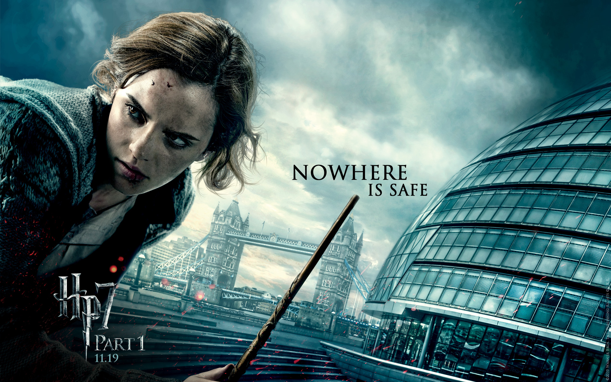

Hermione Granger, if you don't know, is one of the three main characters in the Harry Potter series. Basically, she's a witch who goes to Hogwarts School of Wizardry and is the only voice of reason when the trio goes on adventures children should not be going on. But there are a lot of reasons why she kicks ass.
First off, she's a nerd. Who doesn't love a nerd? Especially when they're a magic nerd and provide the much needed break from the overused "Accio," "Expelliarmus" and "Crucio" spells.
She's also a total badass, which is just awesome. She's one of the best spellcasters on the team, and manages to kick death-eater ass with grace and style. Petrificus Totalus mother fucker.
And let's not forget Emma Fucking Watson. After becoming a child star and the face of Hermione Granger, she didn't fall into a pit of drug abuse and partying like so many others do. No, Emma Watson became a successful model, graduated from Brown college, and was recently appointed as the UN Women Goodwill Ambasador and recently gave her first major speech. Emma Fucking Watson, man.